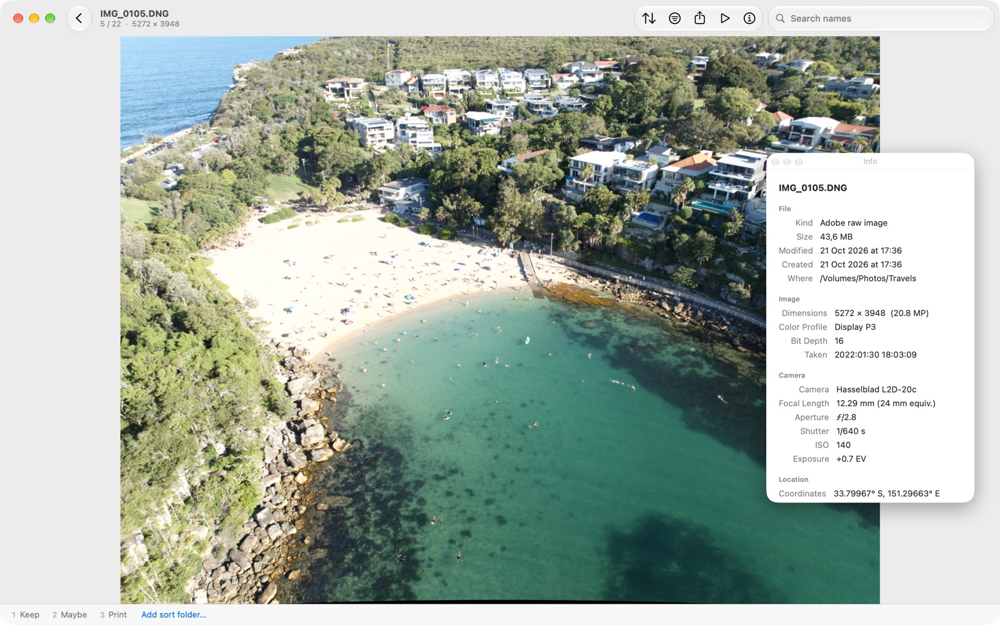

Glimt
Look, press a number, move on.
A fast, calm photo viewer and sorter. Open any folder, page through full-resolution photos without waiting, and sort them into folders as you go. Glimt means a glimpse.
PlatformmacOS 14 or later
PriceFree, Apache 2.0
NetworkNever connects
SizeAbout 2 MB


What it does
- BrowseFolder columns, a pinch-to-resize grid, sort and filter by kind or Finder tag.
- LookSmooth zoom, hold Z for 100%, RAW previews, videos inline, camera and location info.
- SortNumber keys move to a folder, Shift copies; RAW partners and Live Photos travel along.
- UndoEvery move, rename, rotate and tag can be undone.
- No libraryNo import, no catalog. Your files stay where they are.
Get Glimt
Signed and notarized downloads are on GitHub. The Mac App Store version is in review.